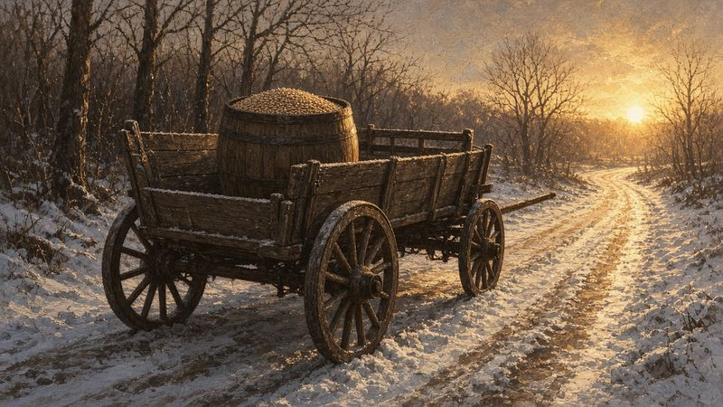
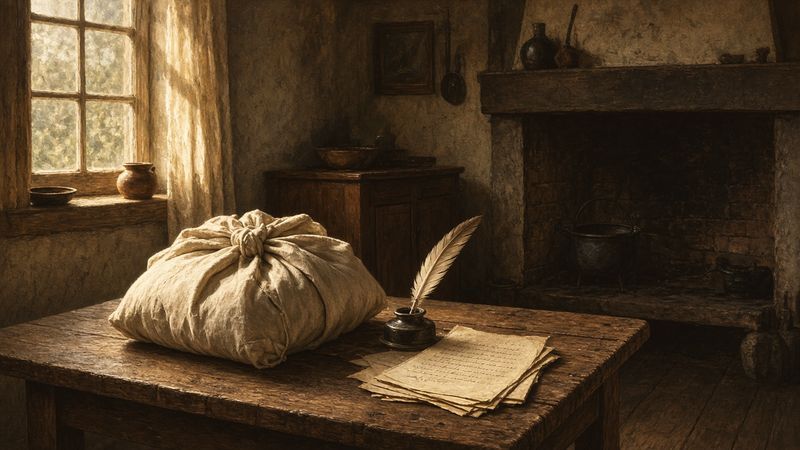
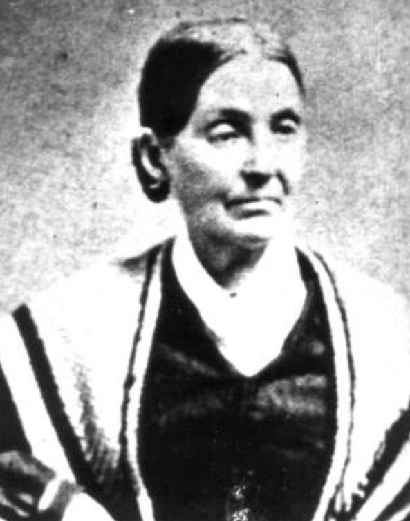
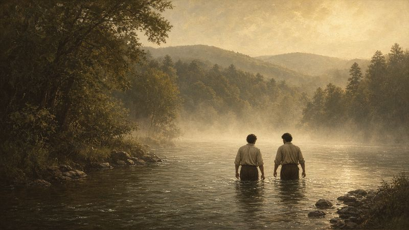
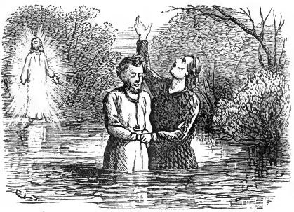
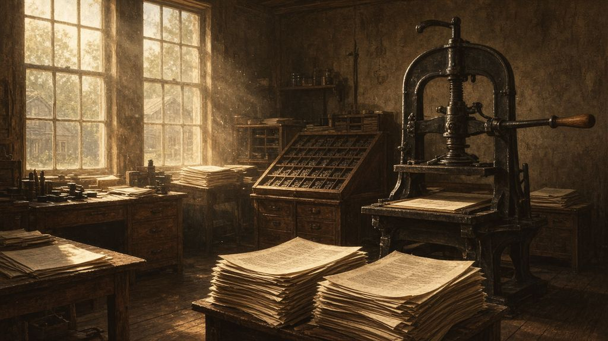

A Slow Walk to the Gate
In the summer of 1828, at the Smith farm in Manchester, New York, the family sent for Martin Harris and set out breakfast. He did not come. They waited until eight, nine, ten, eleven. At half past twelve, Lucy wrote, they saw him “walking with a slow and measured tread towards the house—his eyes fixed thoughtfully upon the ground.” He stopped at the gate, sat on the fence “with his hat drawn over his eyes,” and finally came in. At the table he picked up his knife and fork and dropped them.1
Joseph Smith sat at that table. He had left his wife in Pennsylvania, barely recovered from a labor that nearly killed her, and he had buried their first child only weeks before. He had not slept on the journey. Now he watched Martin’s hands.†2
What Martin said next would make it the hardest summer of Joseph’s life. To understand why, go back to the winter before, and to a barrel of beans.
A Barrel of Beans
For weeks after Joseph brought the plates home, people tried to steal them. He hid them under the hearth, beneath the floor of his father’s shop, and in piles of grain. Neighbors begged to see them, and some offered money. Joseph refused them all.3

One man in Palmyra took the story more seriously than the rest. Martin Harris was a prosperous farmer, more than twenty years older than Joseph, who had sometimes hired him for farm work. Martin questioned the family closely. “If it is the devil’s work,” he said, he would have nothing to do with it. But if it was the Lord’s, he wanted to help. He went home and prayed, and he later said a still, small voice assured him that the work was of God.4
By late 1827 Emma was expecting a child, and her parents agreed to let the young couple come back to Harmony. But Joseph had debts and no money for the move. One day in Palmyra, Lucy recorded, Martin walked up to him in a public house, took out a bag of silver and said: “here, Mr. Smith, is 50 dollars; I give this to you to do the Lord’s work with—No, I give it to the Lord for his own work.” Joseph offered to sign a note for it. Martin refused, and called everyone present to witness that it was a free gift.5
Joseph and Emma set out for Pennsylvania that December with the plates hidden in a barrel of beans.6 In Harmony, Emma’s father demanded to see what was in the box. Joseph would only let him lift it. Isaac Hale felt its weight, and remained unconvinced.7
“I Cannot Read a Sealed Book”
Joseph began by copying characters from the plates onto paper. In February 1828, Martin Harris carried a sheet of them to New York City and showed them to Charles Anthon, a professor of Latin and Greek at Columbia College. According to Martin’s account, Anthon at first said the characters were genuine and gave him a certificate. Then he asked how Joseph had found the plates. When Martin answered “that an angel of God had revealed it unto him,” Anthon asked for the certificate back and tore it up, “saying that there was no such thing now as ministering of angels, and that if I would bring the plates to him he would translate them.” Martin explained that part of the plates were sealed. “He replied, ‘I cannot read a sealed book.’”8
Anthon later gave a different account, and historians still debate what was said in that room.9 What matters for this story is what Martin and Joseph took from it. Martin came home convinced that if the most learned men could not read the characters, then Joseph, unlearned as he was, would have to. “I cannot,” Joseph said when Martin urged him on, “for I am not learned.”10 Both men heard an echo of Isaiah, who wrote of a sealed book given to “one that is learned,” who could not read it, and then to one who said, “I am not learned.”11
Emma at the Table
That spring Joseph and Emma moved into a small frame house on the Susquehanna River, near her parents. Joseph began translating, and Emma was his first scribe.


Years later, near the end of her life, her son Joseph Smith III asked her about those days. Her answers are among the most important testimony about how the Book of Mormon came to be. She “frequently wrote day after day” at a small table, she said, with Joseph “sitting with his face buried in his hat, with the stone in it, and dictating hour after hour with nothing between us.” The plates “often lay on the table without any attempt at concealment, wrapped in a small linen table cloth.”12 Joseph used the interpreters found with the plates and, often, a single seer stone, placed in a hat to shut out the light.13
Emma was certain he had no notes to work from. “He had neither manuscript nor book to read from.” She told her son:
The Book of Mormon is of divine authenticity—I have not the slightest doubt of it. I am satisfied that no man could have dictated the writing of the manuscripts unless he was inspired; for, when acting as his scribe, your father would dictate to me for hour after hour; and when returning after meals, or after interruptions, he would at once begin where he had left off, without either seeing the manuscript or having any portion of it read to him.14
At that time, she said, Joseph “could neither write nor dictate a coherent and well-worded letter, let alone dictat[e] a book like the Book of Mormon.”15 Once, Saints relates, he stopped in the middle of dictating, grew pale, and asked whether Jerusalem had walls around it. When Emma said it did, he was relieved; he had been afraid he was being deceived.16
Picture the little house in the spring of 1828: the river high with snowmelt outside, Emma heavy with her first child, bent over the paper while her husband’s voice came slowly out of the hat.† The words that came were the beginning of a record that, by its own account, began in Jerusalem, “in the commencement of the first year of the reign of Zedekiah, king of Judah.”17
“All Is Lost”
In April, Martin Harris came to Harmony to take over as scribe. By mid-June the two men had filled 116 pages.18
Martin’s wife, Lucy Harris, had been suspicious of the whole enterprise from the start. Martin was sure that if she could read the translation, she would come around. He asked Joseph to let him take the pages home. Joseph asked the Lord, and the answer was no. Martin asked again. Joseph prayed again, and again the answer was no. Martin pressed a third time, and this time Joseph was permitted to do as he wished, on the condition that Martin show the pages only to a few named family members. Martin swore to it and left for Palmyra with the only copy.19
The next day, on June 15, 1828, Emma gave birth to a son after an agonizing labor. The baby died the same day. A gravestone still stands on the Hale property in Harmony: “In Memory of An Infant Son of Joseph And Emma Smith June 15th 1828.”20 For a time it seemed that Emma would die too. Joseph hardly left her side.
When Emma began to recover, after about two weeks, her thoughts turned to Martin, who had not written. She urged Joseph to go and find out what had happened, and asked that her mother be sent to stay with her. Joseph took the stagecoach north. He could not eat or sleep. A fellow passenger, seeing his state, asked what was wrong. Joseph told him only part of it: that he had left a sick wife, and “he had buried his first and only child but a few days previous.” The stranger insisted on walking the last twenty miles through the forest with him, and for the final four miles had to hold him up by the arm.21 Latter-day Saints have long seen the Lord’s hand in small mercies like that one: a stranger on a dark road who would not let a grieving man walk alone.
The next morning came the long wait at his parents’ table, and the slow walk to the gate that opens this chapter. Then Martin pressed his hands to his temples and cried out in deep anguish that he had lost his soul: “I have lost my soul!!”22
Joseph sprang up. “Martin, have you lost that manuscript?”
“Yes, it is gone,” Martin said, “and I know not where.”
“Oh my God!” said Joseph. “All is lost! all is lost! what shall I do? I have sinned; it is I who tempted the wrath of God; for I should have been satisfied with the first answer, which I received from the Lord.”23
He told Martin to go back and search again. “It is all in vain,” Martin said. “I have ripped open beds and pillows; and I know it is not there.” Joseph paced the floor and wept. “Then must I,” he said, “return with such a tale as this? I dare not do it. And how shall I appear before the Lord?” Lucy tried to comfort him, but “sobs and groans, and the most bitter lamentation filled the house.” The next morning he left for Harmony. “We parted with heavy hearts,” his mother wrote, “for it now appeared that all which we had so fondly anticipated… was in a moment fled.”24
“Thou Art Still Chosen”
Back in Harmony, the angel took the plates and the interpreters from him. Joseph had lost his child, nearly lost his wife, and lost the manuscript, all in a few weeks. Now he had lost the gift too.
That July, after a season of repentance, Joseph received a revelation. It is the earliest revelation that survives in his own records, and it does not flatter him:
The works, and the designs, and the purposes of God cannot be frustrated, neither can they come to naught.… Remember, remember that it is not the work of God that is frustrated, but the work of men.25
The Lord rebuked him: “how oft you have transgressed the commandments and the laws of God, and have gone on in the persuasions of men. For, behold, you should not have feared man more than God.” And then: “But remember, God is merciful; therefore, repent of that which thou hast done which is contrary to the commandment which I gave you, and thou art still chosen, and art again called to the work.”26
That Joseph wrote this down at all, and later published it for anyone to read, says something about him. Prophets in the Bible are often rebuked by God in their own books. Joseph’s first written revelation was a rebuke too. He could have hidden it. He published it.
The plates and the gift were restored. When Joseph’s parents came to Harmony that fall to see how he was, they found him “looking calm and happy,” and he told them that the angel had said “the Lord loved me for my faithfulness and humility.” He added: “Emma writes for me now, but the angel said that the Lord would send someone to write for me, and I trust that it will be so.”27 The lost pages were never recovered. Joseph was later told not to retranslate them, and the account was replaced by a parallel record that now opens the Book of Mormon.28
A Schoolteacher from Vermont
The someone was already on his way. In the fall of 1828, a young schoolteacher named Oliver Cowdery, a year younger than Joseph, took a teaching job near the Smith farm and boarded with Joseph’s parents. Over the winter he earned the family’s trust, and they told him about the plates. Oliver prayed and, he later said, the Lord showed him the plates and Joseph’s work in a vision.29
When the school term ended, Oliver and Joseph’s brother Samuel walked more than a hundred miles to Harmony through the cold spring mud. “On the 5th day of April, 1829,” Joseph wrote, “Oliver Cowdery came to my house, until which time I had never seen him.” Two days later, “I commenced to translate the Book of Mormon, and he began to write for me.”30
What followed was one of the most remarkable stretches of work in the history of religion. Almost all of the Book of Mormon as we have it was dictated in about three months, between April and June of 1829.31 Oliver never forgot it:
These were days never to be forgotten—to sit under the sound of a voice dictated by the inspiration of heaven, awakened the utmost gratitude of this bosom! Day after day I continued, uninterrupted, to write from his mouth.32
What the Book Said
For readers who have never opened it, a word about what Joseph was dictating.
The Book of Mormon begins in Jerusalem, “in the commencement of the first year of the reign of Zedekiah, king of Judah,” when, it says, “there came many prophets, prophesying unto the people that they must repent, or the great city Jerusalem must be destroyed.”33 One of those who heeded them was a man named Lehi. The book tells how the Lord led Lehi’s family out of Jerusalem shortly before the Babylonian conquest, across the desert and the sea, to a promised land in the Western Hemisphere. His descendants became two peoples, the Nephites and the Lamanites, and the book follows them for about a thousand years through prophets, wars, kings and reformers, quoting Isaiah at length along the way.
Its high point is the visit of the resurrected Jesus Christ to the people of the Americas. A multitude gathered at a temple “saw a Man descending out of heaven,” who “stretched forth his hand and spake unto the people, saying: Behold, I am Jesus Christ, whom the prophets testified shall come into the world.”34 He taught them, healed their sick, blessed their children one by one, and organized his church among them.
The record closes with a prophet named Moroni, the last of his people, burying the plates in a hill. He is the same Moroni, Latter-day Saints believe, who came to Joseph’s bedside fourteen centuries later. His last words in the book are an invitation that missionaries have quoted ever since: to read, to ponder, and to “ask God, the Eternal Father, in the name of Christ, if these things are not true.”35
On the Banks of the Susquehanna
As they translated, Joseph and Oliver came to passages about baptism and the authority to perform it. Joseph, like his brother Alvin, had never been baptized. On May 15, 1829, the two young men went into the woods near the river to ask the Lord about it.


While we were thus employed, praying and calling upon the Lord, a messenger from heaven descended in a cloud of light, and having laid his hands upon us, he ordained us, saying:
Upon you my fellow servants, in the name of Messiah, I confer the Priesthood of Aaron, which holds the keys of the ministering of angels, and of the gospel of repentance, and of baptism by immersion for the remission of sins; and this shall never be taken again from the earth until the sons of Levi do offer again an offering unto the Lord in righteousness.36
The messenger said “that his name was John, the same that is called John the Baptist in the New Testament.” He told them to baptize each other. They waded into the Susquehanna, Joseph baptized Oliver and Oliver baptized Joseph, and both, Joseph wrote, “were filled with the Holy Ghost, and rejoiced in the God of our salvation.”37
Readers who know the Hebrew Bible will hear something familiar in John’s words. “The sons of Levi” and “an offering in righteousness” come from Malachi again, from the third chapter, which Moroni had quoted: “he shall purify the sons of Levi, and purge them as gold and silver, that they may offer unto the LORD an offering in righteousness.”38 And the messenger himself, in the Gospel of Luke, was the son of a priest of the course of Abijah, a descendant of Aaron.39 The first priesthood restored, as Latter-day Saints understand it, carried the name of Moses’s brother and the promise of the last of the prophets.
Oliver remembered the angel’s voice: “though mild, pierced to the center, and his words, ‘I am thy fellow-servant,’ dispelled every fear.”40
John told them that he acted under the direction of Peter, James and John, who held a higher priesthood, and that it would be given to them later.41 It was. The date is not recorded, but Joseph later wrote of hearing “the voice of Peter, James, and John in the wilderness between Harmony, Susquehanna county, and Colesville, Broome county, on the Susquehanna river, declaring themselves as possessing the keys of the kingdom.”42
“Not Any Longer … Alone”
Opposition was building in Harmony, and in June 1829 David Whitmer, a friend of Oliver’s, came with a wagon to move Joseph, Emma and Oliver to his family’s farm in Fayette, New York. There, in an upstairs room of Peter Whitmer Sr.’s house, the translation was finished.43
The book itself promised that witnesses would see the plates. Martin Harris, Oliver Cowdery and David Whitmer asked to be those witnesses. Joseph told Martin he must first “humble yourself before your God this day, that you may obtain a forgiveness of your sins.” The four men went into the woods to pray. Martin, feeling he was the obstacle, withdrew. The other three then saw an angel holding the plates and turning the leaves. Joseph found Martin praying alone, joined him, and the vision was repeated.44
That afternoon, between three and four o’clock, Lucy was sitting in a bedroom with Mrs. Whitmer when Joseph came in and threw himself down beside her:
Father, mother; you do not know happy I am; the Lord has now caused the plates to be shown to three more besides myself.—they have seen an angel, who has testified to them; and they will have to bear witness to the truth of what I have said; for now they know for themselves, that I do not go about to deceive the people. And I feel as if I was relieved of a burden, which was almost to heavy for me to bear; and it rejoices my heart, that I am not any longer to be entirely alone in the world.45
For six years he had carried this alone. Now there were others. Of all the moments in his mother’s history, this may be the one that shows most plainly how lonely the work had been.
Their testimony, printed in every copy of the Book of Mormon, reads in part: “We declare with words of soberness, that an angel of God came down from heaven, and he brought and laid before our eyes, that we beheld and saw the plates, and the engravings thereon.”46
A few days later, near the Smith home in Manchester, Joseph showed the plates to eight more men: his father, his brothers Hyrum and Samuel, four Whitmer brothers and their brother-in-law Hiram Page. They saw no angel. They held the plates in their hands. Their testimony is plainer: “we have seen and hefted, and know of a surety that the said Smith has got the plates of which we have spoken.”47
The Church’s historians note something that has impressed many readers. Each of the Three Witnesses later separated from Joseph and the Church for a time, and two returned. Some of the Eight also became estranged. Yet “they continued to affirm their testimony as witnesses throughout their lives.”48
Five Thousand Copies
Joseph secured a copyright on June 11, 1829. The Palmyra printer Egbert B. Grandin at first refused the job, then agreed to print and bind five thousand copies for $3,000, but he wanted the payment secured before he began. Martin Harris mortgaged his farm to guarantee it.49 It took Grandin and his workmen about seven months. Hyrum Smith and Oliver Cowdery watched over the work, and Oliver made a second handwritten copy so the original never had to leave their hands.50

By March 26, 1830, the first copies were bound and on sale on the ground floor of Grandin’s printing office in Palmyra, 590 pages in brown leather.51 The title page said the book had been written in part “to show unto the remnant of the house of Israel what great things the Lord hath done for their fathers; and that they may know the covenants of the Lord, that they are not cast off forever.” The last line of that page was a humble one: “And now, if there are faults they are the mistakes of men.”52
Inside was a passage that Jewish readers might not expect to find in a book from the American frontier. In it, the Lord rebukes Christians who had received the Bible from the Jewish people and repaid them with contempt: “O ye Gentiles, have ye remembered the Jews, mine ancient covenant people? Nay; but ye have cursed them, and have hated them, and have not sought to recover them.… for I the Lord have not forgotten my people.”53 Latter-day Saints have tried, imperfectly but sincerely, to take that rebuke to heart.
A farm boy who had never read the Bible through now had his name on the title page of a book of scripture. He called himself not its author but its translator. He had done it, he always said, “by the gift and power of God.”54
Eleven days later, a small company would crowd into a log house in Fayette to organize a church. But the book had been stirring up Palmyra for months already.
Key: † marks imagined connective detail. Full citations and verification status are in 07-sources.md. Joseph Smith—History (JS-H) is the canonized text of Joseph’s 1838–39 history. Lucy Mack Smith is quoted from her 1845 history (JSP fair copy).
Notes
-
Lucy Mack Smith, History, 1845, 130–31, JSP, https://www.josephsmithpapers.org/paper-summary/lucy-mack-smith-history-1845/137. The scene continues later in this chapter (“All Is Lost”). ↩
-
† In the chapter’s opening scene, Joseph watching Martin’s hands is imagined. His sleeplessness on the journey, Emma’s condition and the child’s death are documented in the notes to “All Is Lost”; the breakfast scene is Lucy’s (note 1). ↩
-
Saints, vol. 1, ch. 5, https://www.churchofjesuschrist.org/study/history/saints-v1/05-all-is-lost; Lucy Mack Smith, History, 1845, 109–114, JSP. ↩
-
Saints, vol. 1, ch. 5. ↩
-
Lucy Mack Smith, History, 1845, 121, JSP, https://www.josephsmithpapers.org/paper-summary/lucy-mack-smith-history-1845/128. ↩
-
Saints, vol. 1, ch. 5. ↩
-
Saints, vol. 1, ch. 5. ↩
-
Joseph Smith—History 1:63–65 (Martin Harris’s account as recorded by Joseph). ↩
-
See
07-sources.md. Anthon’s 1834 and 1841 letters deny that he authenticated the characters. ↩ -
Saints, vol. 1, ch. 5. ↩
-
Isaiah 29:11–12 (KJV). ↩
-
Emma Smith, interview with Joseph Smith III, February 1879, published as “Last Testimony of Sister Emma,” Saints’ Herald 26 (Oct. 1, 1879); quoted in Gospel Topics Essays, “Book of Mormon Translation,” https://www.churchofjesuschrist.org/study/manual/gospel-topics-essays/book-of-mormon-translation. ↩
-
Gospel Topics Essays, “Book of Mormon Translation”; Church History Topics, “Seer Stones.” ↩
-
“Last Testimony of Sister Emma,” quoted in GTE, “Book of Mormon Translation.” ↩
-
“Last Testimony of Sister Emma,” quoted in GTE, “Book of Mormon Translation.” The bracket is the essay’s. ↩
-
Saints, vol. 1, ch. 5 (from Emma’s 1856 recollection to Edmund C. Briggs). ↩
-
1 Nephi 1:4. ↩
-
GTE, “Book of Mormon Translation”; Church History Topics, “Lost Manuscript of the Book of Mormon.” ↩
-
Saints, vol. 1, ch. 5; Lucy Mack Smith, History, 1845, 126–28. ↩
-
Church History Topics, “Joseph and Emma Hale Smith Family,” https://www.churchofjesuschrist.org/study/history/topics/joseph-and-emma-hale-smith-family. A relative later wrote the name “Alvin” in a family Bible, but Emma said the child was never named. ↩
-
Lucy Mack Smith, History, 1845, 128–29, JSP, https://www.josephsmithpapers.org/paper-summary/lucy-mack-smith-history-1845/135. ↩
-
Lucy Mack Smith, History, 1845, 130–31, JSP, https://www.josephsmithpapers.org/paper-summary/lucy-mack-smith-history-1845/137. The manuscript reads “Oh! I have a lost my soul! I have lost my soul!!” Only the second, clean phrase is quoted. ↩
-
Lucy Mack Smith, History, 1845, 131, JSP, https://www.josephsmithpapers.org/paper-summary/lucy-mack-smith-history-1845/138. ↩
-
Lucy Mack Smith, History, 1845, 131–32. ↩
-
Doctrine and Covenants 3:1, 3; Saints, vol. 1, ch. 6, https://www.churchofjesuschrist.org/study/history/saints-v1/06-the-gift-and-power-of-god. ↩
-
Doctrine and Covenants 3:6–7, 10. ↩
-
Saints, vol. 1, ch. 6, quoting Lucy Mack Smith’s history. ↩
-
Doctrine and Covenants 10:30–45; Church History Topics, “Lost Manuscript of the Book of Mormon.” ↩
-
Saints, vol. 1, ch. 6; Doctrine and Covenants 6:22–23. ↩
-
Joseph Smith—History 1:66–67; Saints, vol. 1, ch. 6. ↩
-
GTE, “Book of Mormon Translation.” ↩
-
Oliver Cowdery, Messenger and Advocate, Oct. 1834, as printed in the note following Joseph Smith—History 1:75. ↩
-
1 Nephi 1:4; see also 1 Nephi 2:2–4; Saints, vol. 1, ch. 7. ↩
-
3 Nephi 11:8–10; Saints, vol. 1, ch. 7. ↩
-
Moroni 10:4; quoted in GTE, “Book of Mormon Translation.” † The river, Emma’s posture and the scene are imagined. That Emma was pregnant and served as scribe in spring 1828 is documented (Saints, ch. 5). ↩
-
Joseph Smith—History 1:68–69; Doctrine and Covenants 13. ↩
-
Joseph Smith—History 1:70–73. ↩
-
Malachi 3:3 (KJV). ↩
-
Luke 1:5, 13 (KJV): “a certain priest named Zacharias, of the course of Abia: and his wife was of the daughters of Aaron.” ↩
-
Oliver Cowdery’s account, note following Joseph Smith—History 1:75. ↩
-
Joseph Smith—History 1:72. ↩
-
Doctrine and Covenants 128:20; Church History Topics, “Restoration of the Melchizedek Priesthood,” which notes that the exact date cannot be determined. ↩
-
Saints, vol. 1, ch. 7, https://www.churchofjesuschrist.org/study/history/saints-v1/07-fellow-servants. ↩
-
Lucy Mack Smith, History, 1845, 152–53, JSP, https://www.josephsmithpapers.org/paper-summary/lucy-mack-smith-history-1845/160; Saints, vol. 1, ch. 7. ↩
-
Lucy Mack Smith, History, 1845, 153–54, JSP, https://www.josephsmithpapers.org/paper-summary/lucy-mack-smith-history-1845/161. Lucy’s “do not know happy I am” (a word evidently dropped) and “almost to heavy” are retained as written. ↩
-
“The Testimony of Three Witnesses,” Book of Mormon. ↩
-
“The Testimony of Eight Witnesses,” Book of Mormon; Saints, vol. 1, ch. 7. ↩
-
Church History Topics, “Witnesses of the Book of Mormon,” https://www.churchofjesuschrist.org/study/history/topics/witnesses-of-the-book-of-mormon. ↩
-
Saints, vol. 1, ch. 8 and notes (Copyright for Book of Mormon, June 11, 1829, JSP; Indenture, Martin Harris to Egbert B. Grandin, Aug. 25, 1829). ↩
-
Saints, vol. 1, ch. 7; GTE, “Book of Mormon Translation” (printer’s manuscript). ↩
-
Saints, vol. 1, ch. 8, https://www.churchofjesuschrist.org/study/history/saints-v1/08-rise-of-the-church-of-christ. ↩
-
Book of Mormon, title page. ↩
-
2 Nephi 29:5. ↩
-
GTE, “Book of Mormon Translation,” quoting the preface to the 1830 edition. ↩